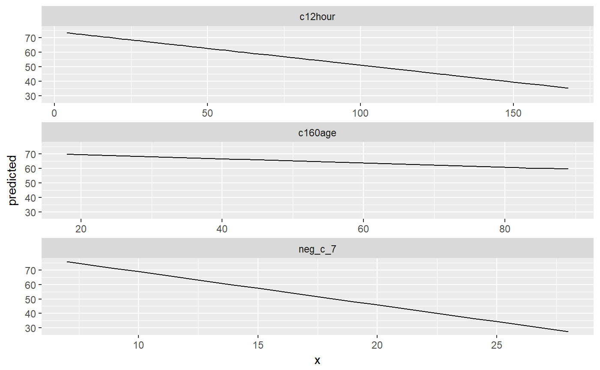

ggalleffects() computes marginal effects of model terms.
It internally calls allEffects and
puts the result into tidy data frames.
ggalleffects(model, terms = NULL, ci.lvl = 0.95, ...)
| model | A fitted model object, or a list of model objects. Any model that is supported by the effects-package should work. |
|---|---|
| terms | Character vector with term names of selected variables from
|
| ci.lvl | Numeric, the level of the confidence intervals. For |
| ... | Further arguments passed down to |
A list of tibbles (with ggeffects class attribute) with consistent
data columns. The list contains one tibble per model term. Columns are:
xthe values of the model predictor to which the effect pertains, used as x-position in plots.
predictedthe predicted values, used as y-position in plots.
conf.lowthe lower bound of the confidence interval for the predicted values.
conf.highthe upper bound of the confidence interval for the predicted values.
Interaction effects are not included in the return value, i.e. ggalleffects()
does not compute marginal effects for interaction terms. Use gginteraction
to create tidy data frames especially for interaction terms.
data(efc) fit <- lm(barthtot ~ c12hour + neg_c_7 + c161sex + c172code, data = efc) ggalleffects(fit)#> $c12hour #> # A tibble: 62 x 5 #> x predicted conf.low conf.high group #> * <dbl> <dbl> <dbl> <dbl> <fct> #> 1 4 74.4 72.3 76.5 c12hour #> 2 5 74.2 72.1 76.3 c12hour #> 3 6 73.9 71.9 76.0 c12hour #> 4 7 73.7 71.6 75.7 c12hour #> 5 8 73.4 71.4 75.4 c12hour #> 6 9 73.2 71.2 75.2 c12hour #> 7 10 72.9 70.9 74.9 c12hour #> 8 11 72.7 70.7 74.6 c12hour #> 9 12 72.4 70.5 74.3 c12hour #> 10 14 71.9 70.0 73.8 c12hour #> # ... with 52 more rows #> #> $neg_c_7 #> # A tibble: 21 x 5 #> x predicted conf.low conf.high group #> * <dbl> <dbl> <dbl> <dbl> <fct> #> 1 7 75.9 73.2 78.6 neg_c_7 #> 2 8 73.6 71.2 75.9 neg_c_7 #> 3 9 71.3 69.2 73.3 neg_c_7 #> 4 10 69.0 67.1 70.8 neg_c_7 #> 5 11 66.7 65.0 68.4 neg_c_7 #> 6 12 64.4 62.7 66.0 neg_c_7 #> 7 13 62.1 60.4 63.8 neg_c_7 #> 8 14 59.8 57.9 61.7 neg_c_7 #> 9 15 57.5 55.3 59.7 neg_c_7 #> 10 16 55.2 52.7 57.7 neg_c_7 #> # ... with 11 more rows #> #> $c161sex #> # A tibble: 2 x 5 #> x predicted conf.low conf.high group #> * <dbl> <dbl> <dbl> <dbl> <fct> #> 1 1 64.0 60.6 67.4 c161sex #> 2 2 65.0 63.1 66.9 c161sex #> #> $c172code #> # A tibble: 3 x 5 #> x predicted conf.low conf.high group #> * <dbl> <dbl> <dbl> <dbl> <fct> #> 1 1 64.1 61.0 67.1 c172code #> 2 2 64.8 63.1 66.4 c172code #> 3 3 65.5 62.3 68.7 c172code #> #> attr(,"class") #> [1] "ggalleffects" "list"library(ggplot2) fit <- lm(barthtot ~ c12hour + neg_c_7 + c160age, data = efc) mydf <- get_complete_df(ggalleffects(fit)) ggplot(mydf, aes(x, predicted)) + geom_line() + facet_wrap(~group, scale = "free_x", ncol = 1)